📋 Общая информация
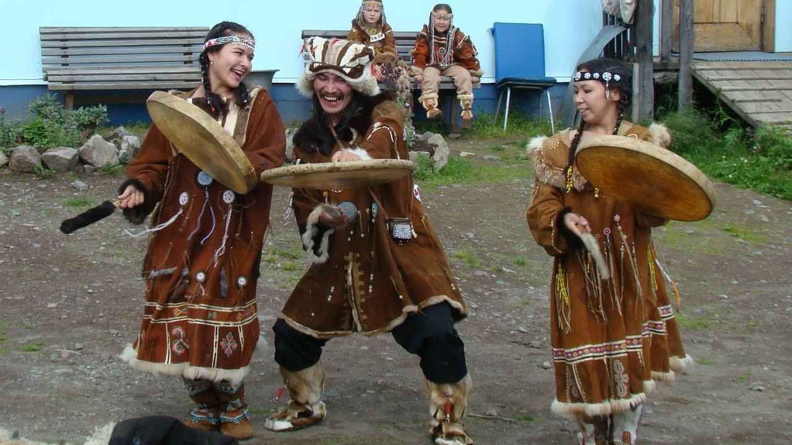
Численность
В России проживает около 8 тысяч коряков. Основное население Камчатского края (сёла Тыгиль, Карага, Палана). Название «нымылан» означает «люди, живущие на земле».
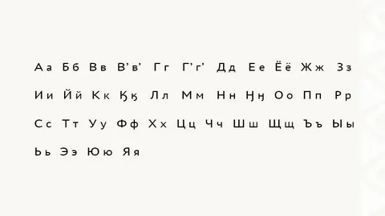
Язык
Корякский язык относится к чукотско-камчатской семье. Близок к чукотскому, но имеет отличия в фонетике и лексике. Имеет два диалекта: чавыванский и каменский. Использует кириллицу.
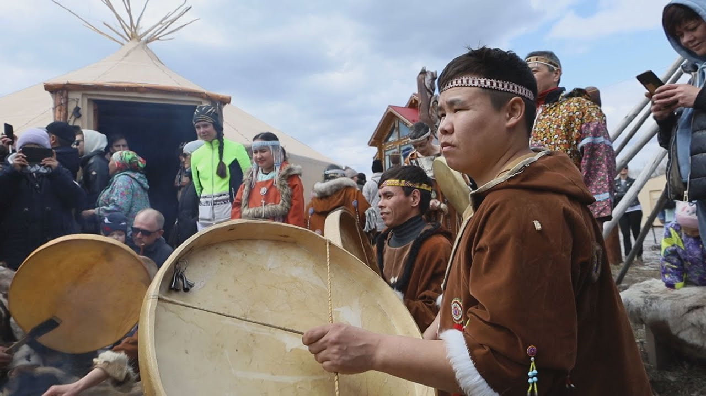
Религия
Традиционные верования — анимизм и шаманизм. Главный дух — Кутк (Творец), хозяин оленей. С XVIII века распространилось православие. Сохранились обряды инициации.
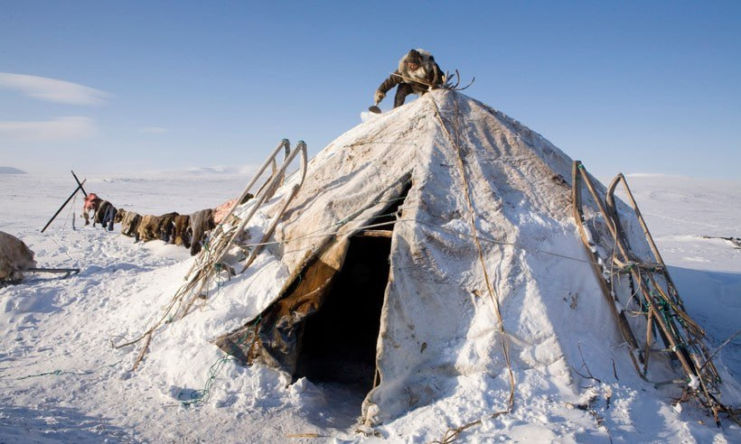
Расселение
Коряки населяют северную и центральную часть Камчатского полуострова. Делятся на две группы: оленные (чавчыв) и прибрежные (нимылан). Крупнейший посёлок — Палана.
🎭 Традиции и культура
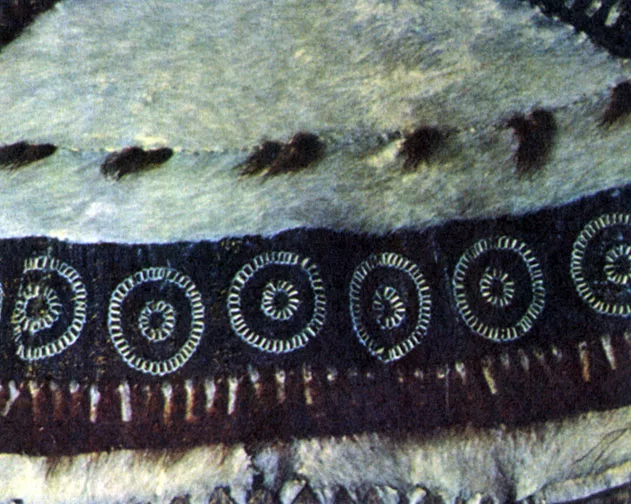
Национальный костюм
Костюм из шкур оленей и собак. Женщины носили «камлейка» (платье с капюшоном), украшенное бисером и мехом. Мужчины — «камлейка» или «парка». Обувь — «пычки» из шкур.
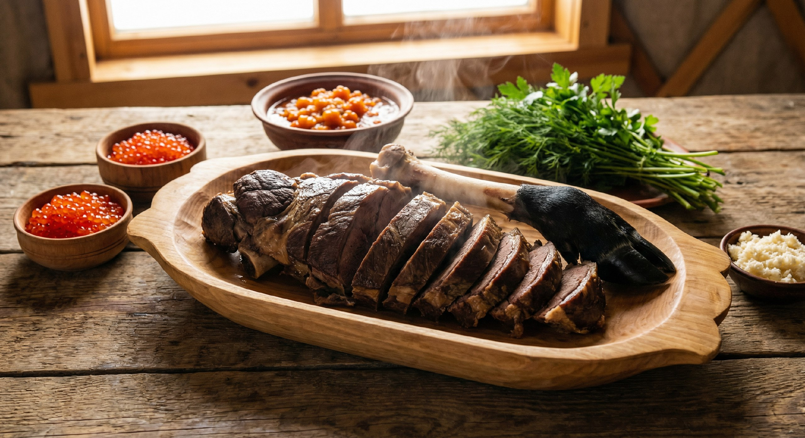
Кухня
Рыба (свежая, сушёная, копчёная), красная икра, оленина, ягоды (морошка, голубика), грибы. Напиток «севка» — бульон из рыбы. Традиционное блюдо — «копытце» (варёная оленина).
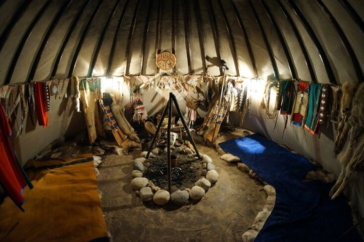
Жилище
«Яранга» — коническое жилище из жердей, покрытое оленьими шкурами. Внутри — «чадра» (внутренняя палатка) из шкур. Зимой использовали полуземлянки «палатка».
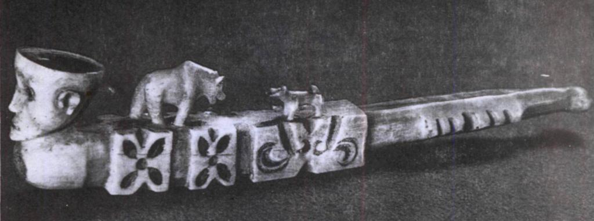
Ремёсла и искусство
Уникальная резьба по кости оленя и моржа, плетение корзин из ивовой лозы, вышивка бисером. Традиционные игрушки из кожи и меха. Народные сказки про Кутка-творца.
🎉 Народные праздники
-
Олют (Праздник оленей)
Главный праздник коряков. Состязания на оленьих упряжках, борьба, поднятие камней, метание копья. Благословение стада.
-
Праздник первого улова
Весенний обряд благодарности духам воды. Первую рыбу возвращают в воду с мольбами о богатом улове.
-
День корякской культуры
Праздник в Палане. Фольклорные выступления, конкурсы национальных костюмов, ярмарки ремёсел.
-
Обряд инициации
Древний обряд посвящения юношей во взрослые. Испытания выносливостью, знание традиций, шаманские ритуалы.
📸 Галерея
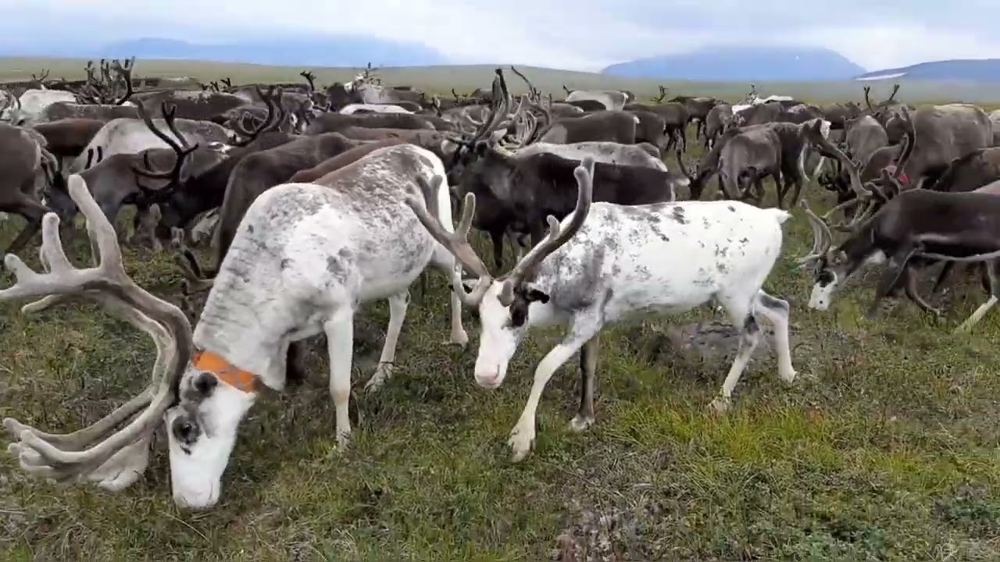
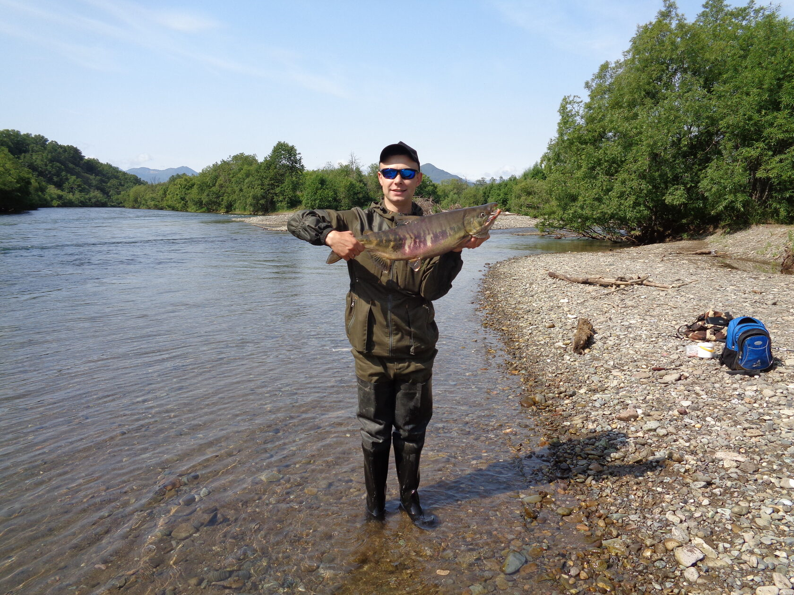
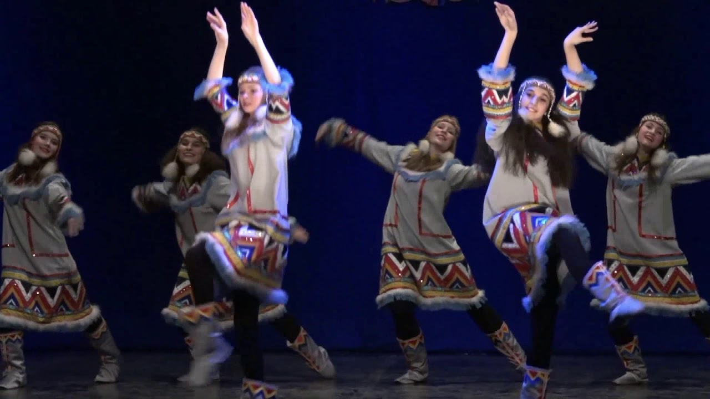
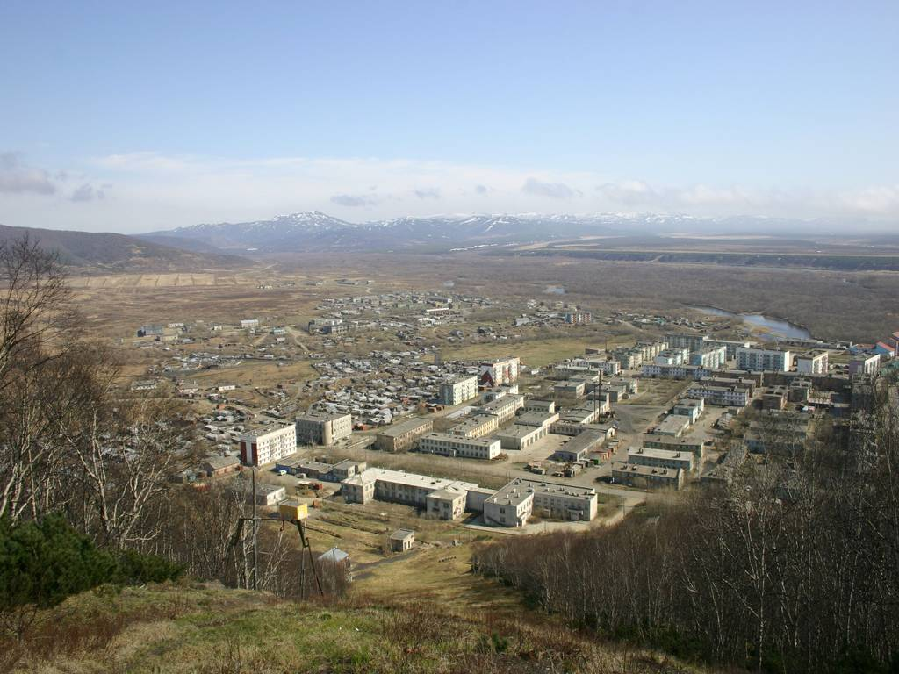
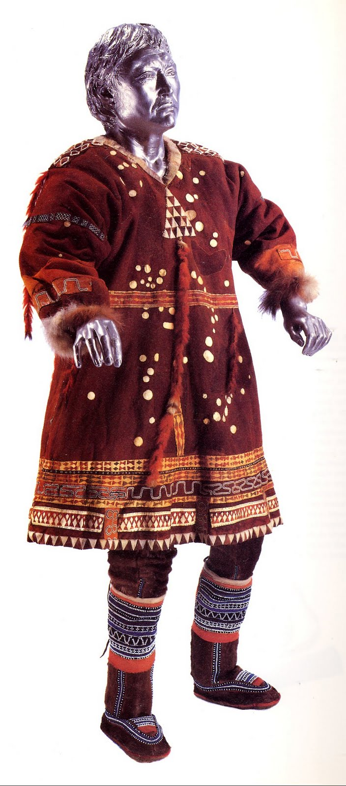
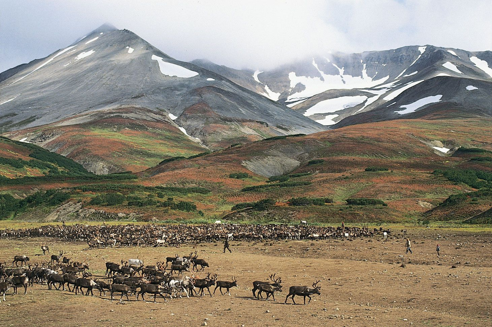
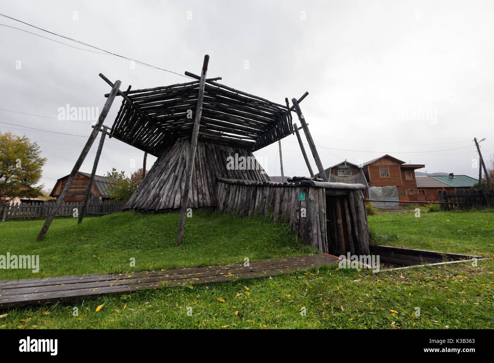
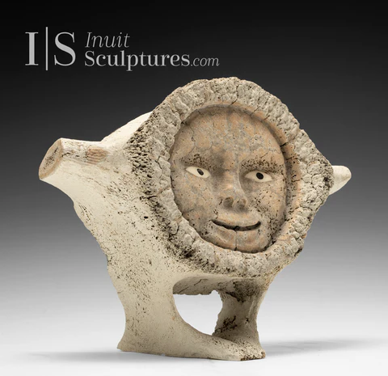
💡 Интересные факты
🌋 Камчатка
Коряки живут на «земле огня и льда» — полуострове с 300 вулканами, гейзерами и горячими источниками.
🐻 Медведь-косолап
Бурый медведь — священное животное коряков. Существует обряд «похорон медведя» после охоты.
🐕 Собачьи упряжки
Коряки разводили собак камчатской породы — предков современных хаски. Упряжки использовались зимой.
🎯 Викторина: Насколько хорошо вы знаете культуру коряков?
Ответьте на вопросы на основе информации с этой страницы.